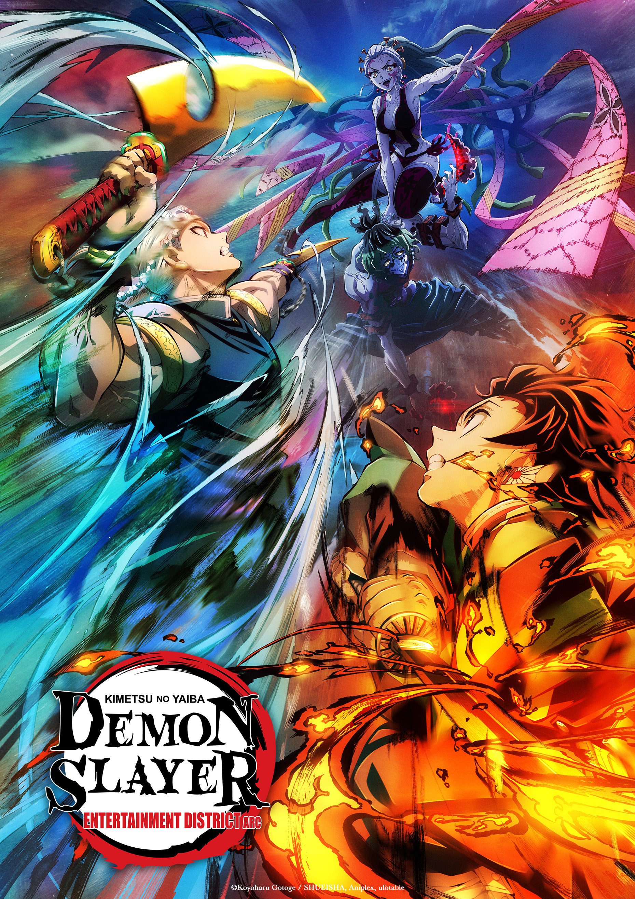
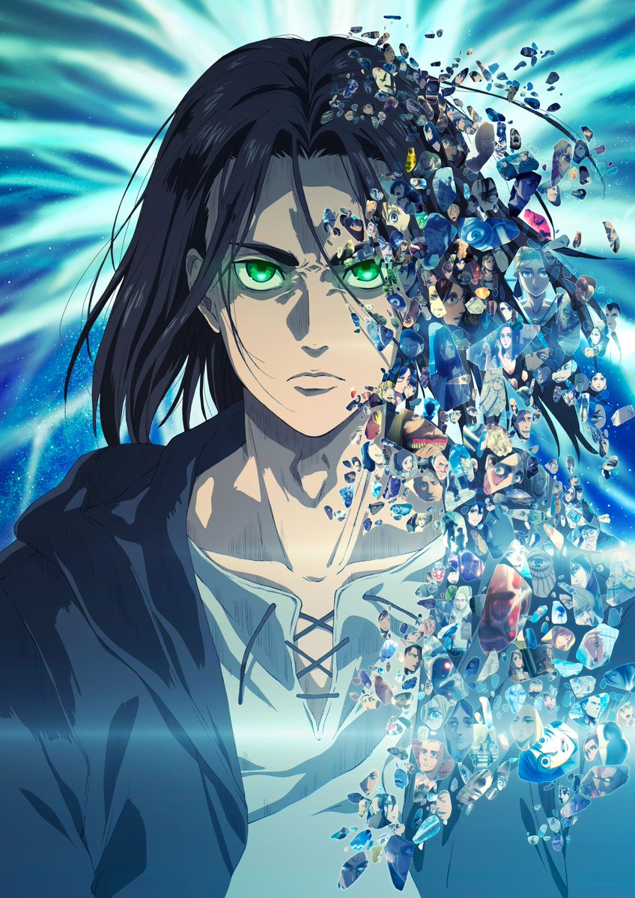
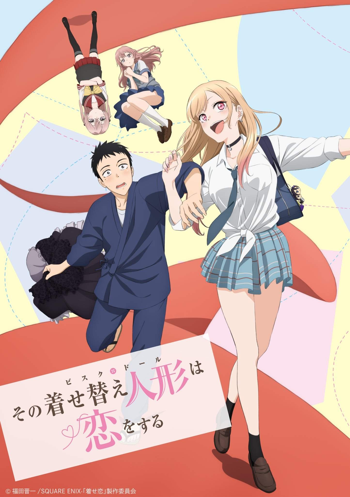

Demon Slayer: Kimetsu no Yaiba
Red District Arc

Estamos en la era Taisho de Japón. Tanjiro, un joven que se gana la vida vendiendo carbón, descubre un día que su familia ha sido asesinada por un demonio. Para empeorar las cosas, su hermana menor Nezuko, la única superviviente de la masacre, ha sufrido una transformación en demonio.
Destrozado por los acontecimientos Tanjiro decide convertirse en un matademonios para poder devolver a su hermana a la normalidad y matar al demonio que masacró a su familia.
Attack on Titan: Shingeki no Kyojin
Final Season Part II

Muchos años atrás, la humanidad estuvo al borde de la extinción con la aparición de unas criaturas gigantes que devoraban a todas las personas. Huyendo, la humanidad consiguió sobrevivir en una ciudad fortificada de altas murallas que se ha convertido en el último reducto de la civilización contra los Titanes que campan a sus anchas por el mundo. Ahora esa paz está a punto de verse interrumpida por una cadena de acontecimientos que llevará a desvelar qué son los Titanes y cómo aparecieron.
My Dress-up Darling: Sono Bisque Doll wa Koi wo Suru
Clover Works

Gojo Wakana es un joven estudiante de instituto que sueña con convertirse en un maestro creando las tradicionales muñecas Hina japonesas, al igual que su abuelo. Siendo esta su única afición, siempre le ha costado hacer amigos y encajar con sus compañeros de clase, y en el instituto eso no iba a ser diferente. Sus compañeros creen que vive en su mundo, y él sabe que está muy lejos del mundo de los demás, en especial del de Marin Kitagawa, la chica más popular de la clase. Esto cambia un día que Marin comparte con él cierto secreto que hará que sus dos mundos se superpongan.